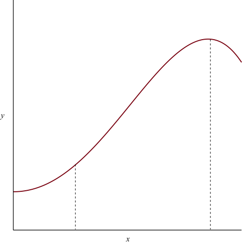

Figure 3:
Recall: There are two different types of integral. Suppose we have a function .
We write
This defines integration as the inverse of differentiation (antidifferentiation). is called the antiderivative of .
You are probably used to using indefinite integrals to evaluate definite integrals, e.g.
But why are we allowed to combine definite and indefinite integrals in this way?
This theorem establishes the astonishing connection between indefinite and definite integrals.
Let be a continuous function on .
Part A.
The function has an antiderivative given by
(signed area between and , definite integral).
Part B.
Given any antiderivative of ,
We don’t have the formal mathematics required to prove this rigorously, and won’t have until Semester 2 of Analysis 1. Isaac Newton didn’t have that formal mathematics yet either, so we (roughly) followed the method of justification he used in 1669.
Justification of Part A.
We wish to differentiate
Suppose changes by a small increment . The corresponding change in is , so the average rate of change from to is
As , this approaches the derivative .
Now, consider the diagram in figure (2).
By definition of the definite integral defining ,
There is a point with such that , as shown in figure (2). So
Hence
As , (since it gets sandwiched between and ), so and
Hence is an antiderivative for .
(see Analysis 1 Semester 2 for a rigorous proof). □
Note that this result allows us to differentiate certain functions defined in terms of integrals. Explicitly, the statement “ is an antiderivative for ” means that
Notice also that the derivative of does not depend on the lower limit of the integral, . If we were to evaluate the integral and write an explicit expression for (assuming that this is possible), this constant would only contribute a constant term to that expression; the derivative of that constant term would therefore be .
Justification of Part B.
Let be an antiderivative of .
So
Hence
Now
so
□
Proof. Let be an antiderivative of , so
Then by Fundamental Theorem of Calculus,
□
Hyperbolic functions are a type of function related to trigonometric functions. We will use them to help us integrate various types of functions, using a technique called integration by substitution, which we’ll meet in the next section.
What do and look like?
As , .
As , .
.
Hanging chains (e.g. those in suspension bridges) have shape, called a "catenary".
Soap bubbles between wands have a surface derived from the shape.
As , .
As , .
As , .
As , .
Hyperbolic functions satisfy identities similar to trigonometric identities.
Examples.
Compare this with the trigonometric identity
i.e.
Compare this with the trigonometric identity
The corresponding trigonometric identity is
(See Exercise Sheet 1.)
The corresponding trigonometric identity is
In fact, Osborn’s Rule states that any trigonometric identity can be converted into a hyperbolic identity by
Note: be careful with the second step, e.g.
so becomes (see Example 2).
This arises because hyperbolic and trigonometric functions are related as follows:
where .
This comes from Euler’s relation:
In trigonometric expressions such as , , etc., can be interpreted as an angle. Similarly, in and , can be interpreted as an area.
Since , for any , the point lies on the curve . Then corresponds to twice the area bounded by this curve, the -axis, and the line from the origin to the point , as shown in figure (6).
Because of this, the inverse hyperbolic functions are denoted , , etc. – “ar” is an abbreviation of “area”.
Since hyperbolic functions are defined in terms of the exponential function, they are straightforward to differentiate.
Similarly,
Integrals involving functions with square roots often arise in mechanics. In this section, we will investigate methods for integrating them using trigonometric and hyperbolic substitutions.
Recall that integration by substitution is a technique for evaluating integrals involving composite functions, using the formula
derived from the chain rule for differentiation. (For a more detailed reminder of integration by substitution, see the additional notes on the course Moodle page.)
Example.
Evaluate the integral
where .
The integrand is a semicircle with radius . To inform which choice of substitution to use, consider figure (7). The coordinates of any point on the curve can be expressed in terms of , the angle between the -axis and the line segment from the origin to that point, using trigonometric functions.
From the right-angled triangle in figure (7), we see that
We will use this for our substitution. Then , , and
using ; alternatively, one can deduce this from the right-angled triangle in figure (7).
Thus the integral is
The second term can be simplified further: using the trigonometric identities
we have
Thus
For a geometric interpretation of this answer, consider the definite integral
| (1.1) |
where . This definite integral is the area shown in figure (8), divided into two regions, and .
The region is a sector of a circle of radius with angle , and therefore has area
the first term in the expression for the definite integral (1.1).
The region is a triangle with base length and height , and therefore has area
the second term in the expression for the definite integral (1.1).
There are a total of six similar cases (including this one) of integrals involving square roots:
With this substitution, and .
In this case, we will use the hyperbolic identity
in a similar way. To do this, we use the substitution , so
Recall from Exercise Sheet 1, question 4(a), that
so
In this section, we will investigate methods for integrating rational functions. A rational function is a function of the form
They can be used to approximate many other functions.
So
We first consider two simpler cases, then show how the general case can be reduced to one of these.
Substitution: let , so that .
Then
so
In this case, we have several options:
We will not cover the details of the substitutions here, since they are so similar to the substitution in Case 1.
Given an integral with a general quadratic denominator,
| (1.2) |
we perform the following steps:
with and constant.
For completeness, there follows an argument for evaluating 1.2 for general values of , and . Since this is notationally fiddly, but not substantially more complicated than the previous example, this general argument will not be covered in the lectures.
The denominator is
To simplify the notation, write , which is a constant. We make the substitution , so .
Then, from (1.3),
so
If , use substitution for with .
If , use partial fractions or a or substitution for with .
If , the integral does not require a substitution.
Given an integral with a general quadratic numerator and denominator,
we use a series of transformations to break this into expressions that we already know how to integrate.
Example.
Evaluate
We write for the integrand. First, we manipulate the integrand to remove the term from the numerator:
We cannot do the same to simplify the linear over quadratic term; however, this would be straightforward to integrate if the numerator was the derivative of the denominator.
Observe: , so we write
We have broken into three terms that we can integrate. Notice that the third term is a multiple of the function from Example 1.4. We get
As before, the fully general case will not be covered in lectures, but is included here for completeness:
The methods in the previous have uses beyond integrating rational functions. Certain other integrals can be evaluated by making a careful choice of substitution that converts the integrand into a rational function.
In the following examples we look at substitution that does this for integrals involving trigonometric functions. The substitution we will use is not at all obvious substitution – it was described by Michael Spivak (author of one of the recommended books for Analysis 1) as “the world’s sneakiest substitution”.
Example.
Evaluate .
We will use the substitution . Consider the right-angled triangle
We have
so
Also
so
Observe that this substitution will convert any integral involving only , and , combined by addition, multiplication and division, into the integral of a rational function. We now use it to evaluate the integral in our example.
Then
Recall that integration by parts is a technique for evaluating integrals involving products of functions using the formula
which is derived from the product rule for differentiation. (For a more detailed reminder of integration by parts, see the additional notes on the course Moodle page.)
Sometimes complicated integrals can be reduced to simpler expressions by successive application of integration by parts, giving a type of formula called a reduction formula.
Examples.
Write
Let
so
Then, using integration by parts,
This formula allows us to evaluate for a given value of – provided we also do so for all lower values of :
so
Write this as
Let
so
Then, using integration by parts,
But
Rearranging this gives
We can use this calculate any . For example, when , we get
We often need to know the length of a curve between two points, e.g. what is the length of the ropes holding Clifton suspension bridge (see Exercise Sheet 3).
Idea. Given a curve

Let be the arc length and a short section of it.
By Pythagoras’ Theorem,
As this becomes an identity
The arclength between and is then
Example.
Find the arc length of the graph of the function
on the interval .
Sketch the graph of for :
If , is undefined.
We have if , hence never.
As ,
.
As ,
as well.

Also,
So when .
Now, the arc length is
with
Thus,
Example.
It can be shown that a hanging chain forms a curve (see Exercise Sheet 4 Q.5)
The arc length on the interval is
Warning. Calculating arc length often leads to integrals we cannot evaluate, e.g. yields
Given a curve we can generate a surface (of revolution) by rotating the curve about the -axis.
What is the area of such a surface?
Idea. Split the shell into thin strips
The area of the shell of a Conical Frustum is .
Thus, the area of the strip is approximately (set )
As
Hence, using the previous arclength formula
Example.
Consider the curve , creating a hyperboloid of revolution (the flipped cooling tower).
As
the surface area is
Hence, the substitution yields and so